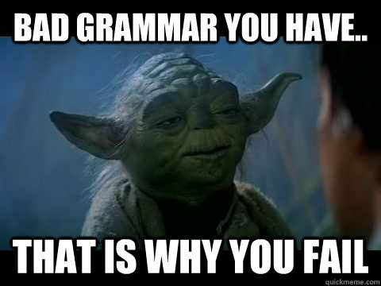
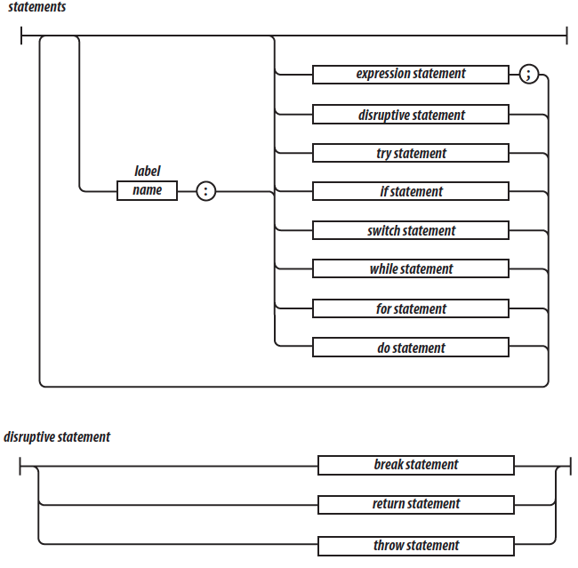
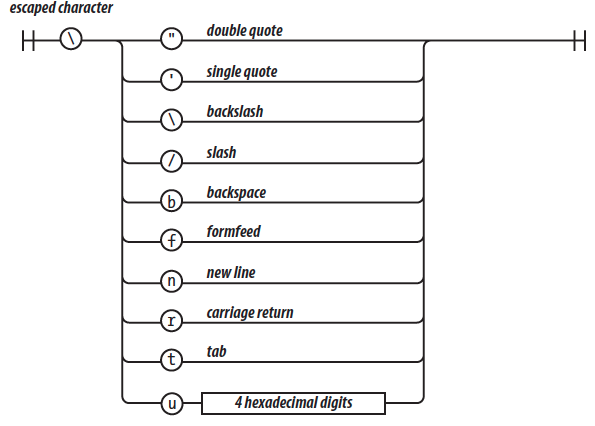

Data Type and basics
- data types
- falsy / truthy values
- strict eq == ===
- semicolons autocomplete
- Arrays + operations
- typeof, isArray etc.
Object
- Object Literals
- Creating Objects
- Built-in Objects
- JSON
- The Math Object
- The Date Object
- The RegExp Object
Functions
- First class citizen
- Defining a Function
- Return Values
- Parameters and Arguments
- Scope
- Hoisting
- Callbacks
- Array Iterators
- currying
- anonymous aka lambda
Functional JavaScript
- What is Functional Programming?
- Function Properties and Methods
- Callbacks
- Closures
- Immediately Invoked Function Expressions
- Functions that Define and Rewrite Themselves
- Recursive Functions
- Currying
Object-oriented Programming in JavaScript
- Object-oriented Programming
- Constructor Functions
- Prototypal Inheritance
- Public and Private Methods
- Inheritance
- The Object Constructor Function
- Creating Objects from Objects
- Adding Methods to Built-in Objects
- Mixins
- Chaining Functions
- This and That
- Borrowing Methods from Prototypes
Organizing Your Code
- namespaces and collisions
- Modules
- patterns
JS Essentials
(Padawan Level)
Created by @damo_inc
“My Story” - by JS
JS had to "look like Java" only less so, [it had to] be Java's dumb kid brother or boy-hostage sidekick. Plus, it had to be done in ten days or something worse than JS would have happenedBrendan Eich, JS Creator
True Story

But JS sucks big time...

try learning it first... maybe
Most people [...] don’t even bother to learn JavaScript first, and then they are surprised when JavaScript turns out to have significant differences from the some other language they would rather be using, and that those differences matter.Douglas Crockford
There are only two kinds of languages: the ones people complain about and the ones nobody uses.Bjarne Stroustrup
...and JS is used a lot ;-)
Grammar (Some)
Dynamically Typed
- You do not declare variable types
- JavaScript's typing is dynamic (meaning a variable can hold an object of any type and cannot be restricted).
Variable Scope
- Global - set on window when you run <script>
- Function – set privately inside of the function
- No block scope
- "this" keyword – refers to object currently running the function (well, this is more complicated)
Operators & Statements
- *Almost* the same as Java
- + (addition and String concatenation), -, *, /
- &&, ||, ++, --, etc
- Comments - Same as in Java (/* ... */ and // ...)
== and === Example
- The == comparison (just value, type coercion)
- The The === operator (value and type)
- Prefer === (strings can be compared with ==)
Reference: MDN
Semicolons
Semicolons are not mandatory (but helpful!)
Example:
return x
return
x
Press down key for answer
In the second one JS will first return, then evaluate x
statements
typeof operator
- The values produced by typeof are:
'number', 'string', 'boolean', 'undefined', 'function', 'object' - If the operand is an array or null, then the result is
'object' - WRONG!
Data Types
Data Types
- String (no Char) – double or single quotes
- Number – 64 bit double float. 11.0 is the same as 11. Don’t do financial Math in JS!
- Object
- Array
- Boolean
- Undefined - is the value of a variable with no value
- Null - variables can be emptied by setting the value to null
- NaN
Strings
- single or double quotes
- all characters are 16 bit Unicode
- JS does not have char type
- "\" escapes special characters
JS Escape Chars
 Borrowed from "JavaScript - The Good Parts" bookliteral vs object
/* Literal - creates primitive */
var str1 = "foo";
var str2 = "foo";
/* Literal - creates object */
var strObj1 = new String("foo");
var strObj2 = new String("foo");
typeof strObj1; //"object"
typeof str1; //"string"
str1 === str2; //true
strObj1 === strObj2; //false
str1 == strObj1; //true
str1 === strObj1; //false
Use literals - should be faster!
Literals will be autoboxed/unboxed when required.
Most implementation do this efficiently by just adding methods that you want to use.
/* primitive with no methods - just a memory allocation. */
var s = 'foo';
/* autoboxing below, but only substring() will be added. */
s.substring('f');
Numbers
- single Number type
- 64-bit floating point - same as Java double
- no separate integer type, e.g. 1 and 1.0 are the same value
- so, no problems with int overflows :-)
Special values - NaN
- NaN - result of an operation that cannot produce a normal result
- NaN is not equal to any value, including itself
- detect NaN with the isNaN(number) function.
Special values - infinity
Infinity represents all values greater than
1.79769313486231570e+308
string conversion
var num = +"1000";
//parseInt(string, radix)
var num = parseInt("1000", 10); //preferred!
var num = parseFloat("1000.32", 10);
Good practices
Always specify radix in parseInt(string, radix).
Otherwise:
- "0x", then radix is 16 (hexadecimal)
- "0", then radix is 8 (octal). This feature is deprecated
- If the string begins with any other value, the radix is 10 (decimal)
var my_int = parseInt(my_string, 10);
Boolean
Falsy Values
| Value | Type |
|---|---|
| 0 | Number |
| "" (empty string) | String |
| NaN | Number |
| false | Boolean |
| null | Object |
| undefined | Undefined |
Truthy Values
“true”: anything else (including the string “false”!)
|| operator
var name = 'Damo Bobson';
var greeting = name || 'John Doe';
console.log(greeting); //prints Damo Bobson
var name = "";
var greeting = name || 'John Doe';
console.log(greeting); //prints John Doe
Arrays
| Item | Value | Quantity |
|---|---|---|
| Apples | $1 | 7 |
| Lemonade | $2 | 18 |
| Bread | $3 | 2 |